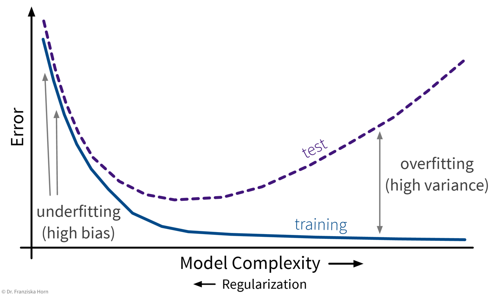
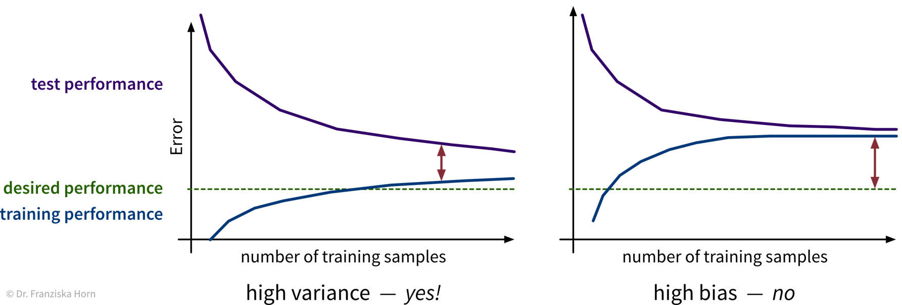
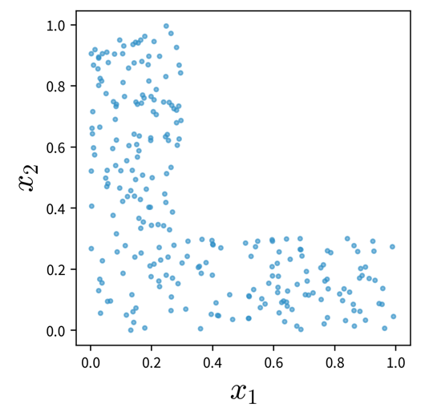
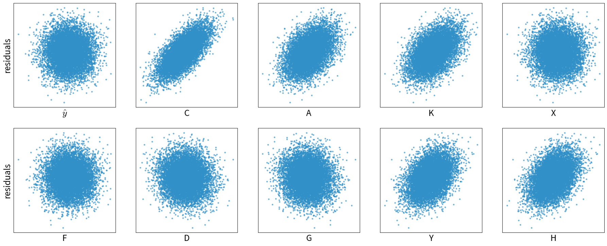
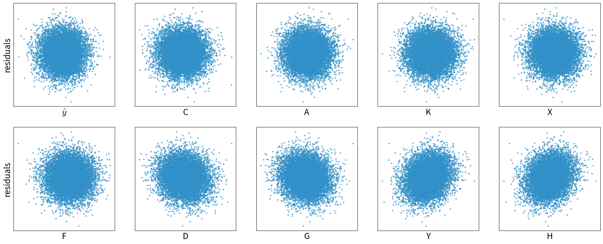
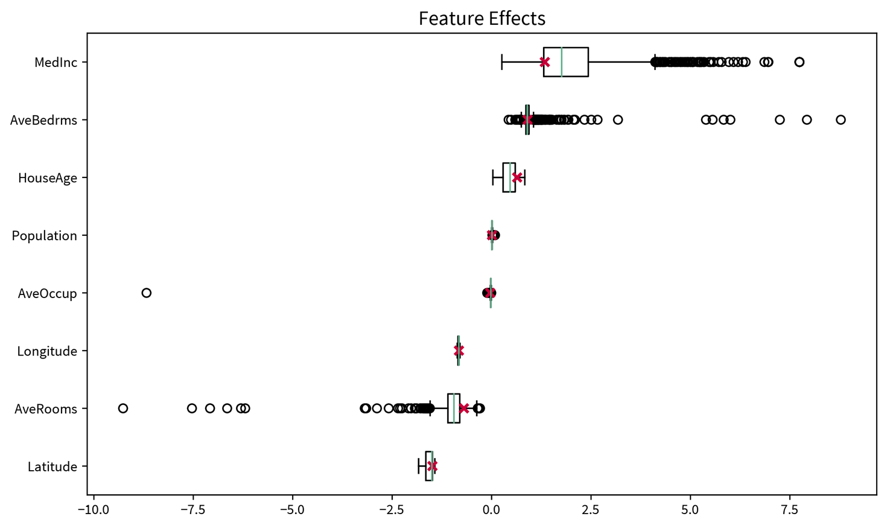

Avoiding Common Pitfalls
All models are wrong, but some are useful.
– George E. P. Box
The above quote is also nicely exemplified by this xkcd comic:
A supervised learning model tries to infer the relationship between some inputs and outputs from the given exemplary data points. What kind of relation will be found is largely determined by the chosen model type and its internal optimization algorithm, however, there is a lot we can (and should) do to make sure what the algorithm comes up with is not blatantly wrong.
What do we want?
A model that …
- … makes accurate predictions
- … for new data points
- … for the right reasons
- … even when the world keeps on changing.
What can go wrong?
- Evaluating the model with an inappropriate evaluation metric (e.g., accuracy instead of balanced accuracy for a classification problem with an unequal class distribution), thereby not noticing the subpar performance of a model (e.g., compared to a simple baseline).
- Using a model that can not capture the ‘input → output’ relationship (due to underfitting) and does not generate useful predictions.
- Using a model that overfit on the training data and therefore does not generalize to new data points.
- Using a model that abuses spurious correlations.
- Using a model that discriminates.
- Not monitoring and retraining the model regularly on new data.
Below you find a quick summary of what you can do to avoid these pitfalls and we’ll discuss most these points in more detail in the following sections.
Before training a model
- Select the right inputs: ask a subject matter expert which variables could have a causal influence on the output; possibly compute additional, more informative features from the original measurements (→ feature engineering).
- Sanity check: Does the dataset contain samples with the same inputs but different outputs? ⇒ Some important features might be missing or the targets are very noisy, e.g., due to inconsistent annotations – fix this first!
- Try a simple model (linear model or decision tree) – this can serve as a reasonable baseline when experimenting with more complex models.
- Think about the structure of the problem and what type of model might be appropriate to learn the presumed ‘input → output’ relationship. For example, if the problem is clearly nonlinear, the chosen model type also needs to be complex enough to at least in principle be able to pick up on this relation (i.e., such that the model does not underfit, see below). A lot of domain knowledge can also be put into the design of neural network architectures.
- Make sure the data satisfies the model’s assumptions ⇒ for pretty much all models except decision trees and models based on decision trees, like random forests, the data should be approximately normally distributed.
- Make sure you’ve set aside a representative test set to evaluate the final model and possibly a validation set for model selection and hyperparameter tuning.
After the model was trained
- Evaluate the model with a meaningful evaluation metric, especially when the classes in the dataset are not distributed evenly (→ balanced accuracy).
- Check that the model can interpolate, i.e., that it generalizes to unseen data points from the same distribution as the training set and does not over- or underfit. Please note that this does not ensure that it can also extrapolate, i.e., that it has learned the true causal relation between inputs and outputs and can generate correct predictions for data points outside of the training domain!
- Carefully analyze the model’s prediction errors to check for systematic errors, which can indicate that the data violates your initial assumptions. For example, in a classification task the performance for all classes should be approximately the same, while in a regression task the residuals should be independent.
- Verify that the model does not discriminate. Due to the large quantities of data used to train ML models, it is not always possible to ensure that the training data does not contain any systematic biases (e.g., ethnicity/gender stereotypes) that a model might pick up on, but it is important to test the model on a controlled test set and individual data slices to catch any discrimination before the model is deployed in production.
- Interpret the model and explain its predictions: Does it use the features you or a subject matter expert expected it to use or does it make predictions based on any spurious correlations?
- If necessary, use model editing or assertions to fix incorrect model predictions. For example, you can manually alter the rules learned by a decision tree or implement additional business rules that override model predictions or act as sanity checks (e.g., a predicted age should never be negative).
- Monitor the model’s performance as it is running in production and watch out for data & concept drifts.
Please note that these steps represent an iterative workflow, i.e., after training some model and analyzing its performance one often goes back to the beginning and, e.g., selects different features or tries a more complex model to improve the performance.
Model does not generalize
We want a model that captures the ‘input → output’ relationship in the data and is capable of interpolating, i.e., we need to check:
Does the model generate reliable predictions for new data points from the same distribution as the training set?
While this does not ensure that the model has actually learned any true causal relationship between inputs and outputs and can extrapolate beyond the training domain (we’ll discuss this in the next section), at least we can be reasonably sure that the model will generate reliable predictions for data points similar to those used for training the model. If this isn’t given, the model is not only wrong, it’s also useless.
Over- & Underfitting
So, why does a model make mistakes on new data points? A poor performance on the test set can have two reasons: overfitting or underfitting.

These two scenarios require vastly different approaches to improve the model’s performance.
Since most datasets have lots of input variables, we can’t just plot the model like we did above to see if it is over- or underfitting. Instead we need to compute the model’s prediction error with a meaningful evaluation metric for both the training and the test set and compare the two to see if we’re dealing with over- or underfitting:
Overfitting: great training performance, bad on test set
Underfitting: poor training AND test performance
Depending on whether a model over- or underfits, different measures can be taken to improve its performance:

However, it is unrealistic to expect a model to have a perfect performance, as some tasks are just hard, for example, because the data is very noisy.
Always look at the data! Is there a pattern among wrong predictions, e.g., is there a discrepancy between the performance for different classes or do the wrongly predicted points have something else in common? Could some additional preprocessing steps help to fix errors for some type of data points (e.g., blurry images)?
Over- or underfitting is (partly) due to the model’s complexity:

In general, one should first try to decrease the model’s bias, i.e., find a model that is complex enough and at least in principle capable of solving the task, since the error on the training data is the lower limit for the error on the test set. Then make sure the model doesn’t overfit, i.e., generalizes to new data points (what we ultimately care about).
Will more data help?
With little data, we risk overfitting. But is it worth getting more data?
→ check learning curves, i.e., how the performance improves when using more training samples:

Instead of more, it might also be helpful to get cleaner data, i.e., with less ambiguous labels! (See talk by Andrew Ng.)
For some tasks it is also possible to generate additional training samples programmatically through data augmentation, i.e., by modifying the original data points. For example, an image of an animal can be rotated or flipped without affecting its label. In this way we can easily increase the size of the training set without the need for human labeling. Furthermore, this makes our model more robust to realistic variations in the data. However, we need to be careful to not create garbage samples, i.e., a human must still be able of recognizing the objects in the images, for example.
Feature Selection
In small datasets, some patterns can occur simply by chance (= spurious correlations).
⇒ Exclude irrelevant features to avoid overfitting on the training data. This is especially important if the number of samples in the dataset is close to the number of features.
Feature selection techniques are either
- unsupervised, which means they only look at the features themselves, e.g., removing highly correlated/redundant features, or
- supervised, which means they take into account the relationship between the features and target variable.
Supervised Feature Selection Strategies:
1.) Univariate feature selection
e.g., correlation between feature & target
from sklearn.feature_selection import SelectKBestCareful: This can lead to the inclusion of redundant features or the exclusion of features that might seem useless by themselves, but can be very informative when taken together with other features:
Also, please note: if we were to reduce the dimensionality with PCA on these two datasets, for the plot on the right, the main direction of variance does not capture the class differences, i.e., while the second PC captures less variance overall, it capture the class-discriminative information that we care about.
⇒ Better:
2.) Model-based feature selection
select features based on coef_ or feature_importances_ attribute of trained model
from sklearn.feature_selection import SelectFromModel3.) Sequential feature selection
greedy algorithm that iteratively includes/removes one feature at a time:
- forward selection: start with no features, iteratively add best feature until the performance stops improving
- backward elimination: start with all features, iteratively eliminate worst feature until the performance starts to deteriorate
from sklearn.feature_selection import SequentialFeatureSelectorGeneral rule: Always remove truly redundant (i.e., 100% correlated) features, but otherwise if in doubt: keep all features.
While feature selection can improve the performance, these automatic feature selection techniques will only select a subset of features that are good predictors of the target, i.e., highly correlated, not necessary variables that correspond to the true underlying causes, as we will discuss in the next section.
Model abuses spurious correlations
By following the strategies outlined in the previous section, we can find a model that is good at interpolating, i.e., generating reliable predictions for new data points from the same distribution as the training set. However, this does not mean that the model actually picked up on the true causal relationship between the inputs and outputs!
ML models love to cheat & take shortcuts! They will often pick up on spurious correlations instead of learning the true causal relationships. This makes them vulnerable to adversarial attacks and data/domain shifts, which force the model to extrapolate instead of interpolate.
Specifically, models that neither over- nor underfit, i.e., that perfectly capture the relation between inputs and outputs in the given samples, often still fail to extrapolate:
Extrapolation on feature combinations
Please note that only because we might have sampled a large range of values for each individual feature, this does not necessary entail that we’ve also covered all relevant combinations of feature values:

If the two features and their effect on the target are independent of each other (e.g., \(y = ax_1 + bx_2\)), this is not too dramatic, however, if these variables interact in some complicated nonlinear way, this might not be modeled correctly when relevant combinations of feature values weren’t sampled.
When deploying an ML system in production, you also need to replicate the preprocessing steps that were used to clean the training data. For example, if you removed outliers from the initial training set, you need to apply the same rules to sort out anomalies in the production data as well, since otherwise the ML model would be forced to extrapolate on these samples.
When setting up a model, we always have to be clear about whether it is enough that the model is capable of interpolating or whether it might also need to extrapolate every once in a while.
If the model will only be used to generate predictions for new data points from the same distribution as the original training samples and it is unlikely that any data drifts will occur, then a model that has a decent performance on a representative hold-out test set will be sufficient for the task. This might be the case when building a softsensor that just needs to construct a new signal from other fixed inputs in a tightly controlled loop.
However, this assumption seldomly holds in practice and especially in safety-critical situations, such as image recognition in self-driving cars or at security checkpoints, it is vital that the model is robust and can not easily be fooled. Other use cases where it is important that the model picks up on meaningful causal relationships include using a model to identify root causes or generating counterfactual “what-if” forecasts, which also require extrapolation, e.g., when trying to simulate under which conditions a catastrophic event might occur without having observed one in the historical data.
A correct prediction is not always made for the right reasons!
The graphic below is taken from a paper where the authors noticed that a fairly simple ML model (not a neural network) trained on a standard image classification dataset performed poorly for all ten classes in the dataset except one, horses. When they examined the dataset more closely and analyzed why the model predicted a certain class, i.e., which image features were used in the prediction (displayed as the heatmap on the right), they noticed that most of the pictures of horses in the dataset were taken by the same photographer and they all had a characteristic copyright notice in the lower left corner.

By relying on this artifact, the model could identify what it perceives as “horses” in this dataset with high accuracy – both in the training and the test set, which includes pictures from the same photographer. However, of course the model failed to learn what actually defines a horse and would not be able to extrapolate and achieve the same accuracy on other horse pictures without this copyright notice. Or, equally problematic, one could add such a copyright notice to a picture of another animal and suddenly the model would mistakenly classify this as a horse, too. This means, it is possible to purposefully trick the model, which is also called an “adversarial attack”.
This is by far not the only example where a model has “cheated” by exploiting spurious correlations in the training set. Another popular example: A dataset with images of dogs and wolves, where all wolves were photographed on snowy backgrounds and the dogs on grass or other non-white backgrounds. Models trained on such a dataset can show a good predictive performance without having learned the true causal relationship between the features and labels.
To catch these kinds of mishaps, it is important to
- critically examine the test set and hopefully notice any problematic patterns that could result in an overly optimistic performance estimate, and
- interpret the model and explain its predictions to see if it has focused on the features you (or a subject matter expert) would have expected (as they did in the paper above).
Adversarial Attacks: Fooling ML models on purpose
An adversarial attack on an ML model is performed by asking the model to make a prediction for an input that was modified in such a way that a human is unaware of the change and would still arrive at a correct result, but the ML model changes its prediction to something else.
For example, while an ML model can easily recognize the ‘Stop’ sign from the image on the left, the sign on the right is mistaken as a speed limit sign due to the strategically placed, inconspicuous stickers, which humans would just ignore:

This happened because the model didn’t pick up on the true reasons humans identify a Stop sign as such, e.g., the octagonal form and the four white letters spelling ‘STOP’ on a red background. Instead it relied on less meaningful correlations to distinguish it from other traffic signs.
Convolutional neural networks (CNN), the type of neural net typically used for image classification tasks, rely a lot on local patterns. This is why they are often easily fooled by leaving the global shape of objects, which humans rely on for identification, intact and overlaying the images with specific textures or other high-frequency patterns to trick the model into predicting a different class.
GenAI & Adversarial Prompts
Due to their complexity, it is particularly difficult to control the output of generative AI (GenAI) models such as ChatGPT. While they can be a useful tool in human-in-the-loop scenarios (e.g., to draft an email or write code snippets that are then checked by a human before they see the light of day), it is difficult to put the necessary guardrails in place to ensure the chatbot can’t be abused in the wild.
A Chevrolet car dealer that tried to use ChatGPT in their customer support chat is just one of many examples where early GenAI applications yielded mixed results at best:

Learning causal models
Finding robust causal models that capture the true ‘input → output’ relationship in the data is still an active research area and a lot harder than learning a model that “only” generalizes well to the test set.
Specifically, this requires knowledge of two things:
- Which input features should be included in the model, i.e., which variables have a causal impact on the target. In practice, this can be complicated by the fact that we might not be able to measure all of these variables directly and have to rely on proxy values.
- What kind of model best captures the true causal relationship, e.g., if the relationship between inputs and target is nonlinear, then a linear model wont be enough. One possibility here is to introduce domain knowledge into the design of a neural network architecture.

The following example is adapted from: “Elements of Causal Inference” by Jonas Peters, Dominik Janzig, and Bernhard Schölkopf (2017).
See also Jonas Peters’ great lecture series on causality. You can also play around with this example yourself in the causal model notebook.
Example: Learning a causal model
Assume this is the true causal graph of some process, where the nodes represent different variables and the edges specify their (linear) influence on one another:
Please note that individual nodes in a causal graph can also represent hidden variables, i.e., process conditions that can not be directly observed, e.g., for which one might want to build a softsensor.
Based on the above stated relationships, we can generate a dataset, where each variable additionally depends on an independent (w.r.t. the other variables) normally distributed noise component. This means for each sample some process conditions are set independently (C and A) while for others the value partially depends on the values already set for the other variables.
n = 20000
C = 1.0 * np.random.randn(n)
A = 0.8 * np.random.randn(n)
K = A + 0.1 * np.random.randn(n)
X = C - 2 * A + 0.2 * np.random.randn(n)
F = 3 * X + 0.8 * np.random.randn(n)
D = -2 * X + 0.5 * np.random.randn(n)
G = D + 0.5 * np.random.randn(n)
Y = 2 * K - D + 0.2 * np.random.randn(n)
H = 0.5 * Y + 0.1 * np.random.randn(n)Since the dependencies between the variables are linear, the optimal model type to learn any ‘input → output’ relation on this dataset is a linear regression model. The true coefficients that this model should find for one input variable are the values on the edges on the way from this variable’s node to the target node multiplied with each other, e.g., for X (input) on Y (target) this would be -2 (from X to D) times -1 (from D to Y), i.e., 2.
Depending on which variables we include as input features, the models is or isn’t able to learn the correct coefficients:
# (1) missing relevant input feature K → wrong coefficient for X
R^2 (train): 0.844; (test): 0.848 ⇒ Y ~ 0.001 + 1.285 * X
# (2) all the right input features → correct coefficients
R^2 (train): 0.958; (test): 0.959 ⇒ Y ~ 0.003 + 2.003 * X + 2.010 * K
# (3) additional input feature D, which has a more direct influence on Y than X
R^2 (train): 0.994; (test): 0.994 ⇒ Y ~ -0.002 - 0.015 * X + 1.998 * K - 1.007 * D
# (4) additional input feature H, which is dependent on (i.e., highly correlated with) Y
R^2 (train): 0.995; (test): 0.995 ⇒ Y ~ 0.001 + 0.242 * X + 0.245 * K + 1.759 * H
# (5) additional input feature G that is not directly causal of Y, but dependent on D
R^2 (train): 0.977; (test): 0.976 ⇒ Y ~ 0.004 + 0.978 * X + 2.002 * K - 0.510 * GOften the best predictive model is not the true causal model (e.g., (4)) and especially regularized models, which try to explain the target with as few variables as possible, often choose variables dependent on the target (such as H) as the single best predictor instead of relying on multiple true causal influences (e.g., notice how K and X already have much lower coefficients in (4)).
But only the causal models are robust to data drifts and can extrapolate:
# Changed equations to generate test data (notice larger noise component)
X = C - 2 * A + 2.0 * np.random.randn(n)
H = 0.5 * Y + 1.0 * np.random.randn(n)
# model (2): true relationship between X and Y → test performance equally good
R^2 (train): 0.958; (test): 0.987 ⇒ Y ~ 0.003 + 2.003 * X + 2.010 * K
# model (4): variable dependent on but not causal of Y → test performance a lot worse
R^2 (train): 0.995; (test): 0.866 ⇒ Y ~ 0.001 + 0.242 * X + 0.245 * K + 1.759 * HBut unfortunately none of the models can handle a concept drift, i.e., when the underlying process, from which the data is sampled, changes:
# Changed equation to generate test data (notice the reversed sign for X on the way to Y)
D = 2 * X + 0.5 * np.random.randn(n)
# model (2): causal relationship between X and Y changed → test performance catastrophic
R^2 (train): 0.958; (test): -1.797 ⇒ Y ~ 0.003 + 2.003 * X + 2.010 * KIn this case only retraining the model on new data helps to recover the performance.
⇒ If the goal is to find a good predictive model, use as input variables the Markov blanket of the target variable, i.e., its parent nodes, child nodes, and the other parent nodes of these child nodes (in the above example, to predict Y this would be D and K (parent nodes) and H (child node that has no other parents)).
⇒ If the goal is to find a causal model that can extrapolate, use as input variables only the parent nodes of the target variable.
Residual Plots
Residual plots can give us a hint as to whether or not we might be missing important input variables in the model.
In regression problems we assume that the input variables explain all important external influences on the target and what remains is just random noise. I.e., as we predict the target as:
\[ \hat{y} = b + w_1x_1 + w_2x_2 + ... + w_dx_d \]
we assume that the true process that generated \(y\) looked like this:
\[ y = b + w_1x_1 + w_2x_2 + ... + w_dx_d + \epsilon \]
where \(\epsilon \in \mathcal{N}(0, \sigma)\) is the unexplained random noise with mean 0 and standard deviation \(\sigma\), which is assumed to be independent of all other factors.
By plotting the residuals (i.e., prediction errors) \(y_i - \hat{y}_i\) against the predicted targets \(\hat{y}_i\) and other variables and observing whether or not these residuals show distinctive patterns or really look like random noise, we can check whether the model is missing important additional input variables.
For example, from the example above for model (1), i.e., when using only X as an input to predict Y, the residuals plots looks like this:

The residuals here are correlated with several other variables, which means we should probably include one of them as an additional input feature.
The residuals plots for model (2), i.e., when using both X and K as features, on the other hand, show randomly distributed residuals, which means, we’re at least not missing some obvious influencing factors:

When working with time series data, you should also check for autocorrelation between the residuals, i.e., it should not be possible to use the residual at time point t to predict the next residual at t+1.
Model discriminates
As we ponder the true causal relations between variables in the data, we also need to consider whether there are some causal relationships encoded in the historical data that we don’t want a model to pick up on. For example, discrimination based on gender or ethnicity can leak into the training data and we need to take extra measures to make sure that these patterns, although they might have been true causal relationships in the past, are not present in our model now.
Biased data leads to (strongly) biased models
Below are some examples where people with the best of intentions have set up an ML model that has learned problematic things from real world data.

de Vries, Terrance, et al. “Does object recognition work for everyone?” IEEE/CVF Conference on Computer Vision and Pattern Recognition Workshops. 2019.
The above problems all arose because the data was not sampled uniformly:
- Tay has seen many more racist and hateful comments and tweets than ‘normal’ ones.
- In historical texts, women were underrepresented in professions such as doctors, engineers, carpenters, etc.
- The image dataset Twitter trained its model on included more pictures of white people compared to people of color.
- Similarly, given a random collection of photos from the internet, these images will have mostly been uploaded by people from developed countries, i.e., pictures displaying the status quo in developing nations are underrepresented.
Even more problematic than a mere underrepresentation of certain subgroups (i.e., a skewed input distribution) is a pattern of systematic discrimination against them in historical data (i.e., a discriminatory shift in the assigned labels).
To summarize: A biased model can negatively affect users in two ways:
- Disproportionate product failures, due to skewed sampling. For example, speech recognition models are often less accurate for women, because they were trained on more data collected from men (e.g., transcribed political speeches).
- Harm by disadvantage / opportunity denial, due to stereotypes encoded in historical data. For example, women are assigned higher credit interest rates than men or people born in foreign countries are deemed less qualified for a job when their resumes are assessed by an automated screening tool.
Retraining models on data shaped by predictions from a biased predecessor model can intensify existing biases. For instance, if a resume screening tool recognizes a common trait (e.g., “attended Stanford University”) among current employees, it may consistently recommend resumes with this trait. Consequently, more individuals with this characteristic will be invited for interviews and hired, further reinforcing the dominance of the trait in subsequent models trained on these employee profiles.
Towards fair models
1.) Know you have a problem
The first step to mitigating these problems is to become aware of them. We often don’t notice a poor performance for an undersampled subgroup, because the model performance overall looks fine:
These two plots show a simple linear regression model trained on data with three subgroups (e.g., subgroups could be based on gender and/or ethnicity). In both cases, the model performs well for the subgroup in the middle, but poorly for the marginalized subgroups. However, if we only consider at the overall \(R^2\) value of the model, the performance of the model on the left seems fine, since here the good performance on the ‘main’ subgroup drowns out the poor performance on the undersampled marginalized subgroups. The poor performance of the model is only apparent when the subgroups are sampled equally.
Therefore:
- Assess the model’s performance for each (known) subgroup individually by slicing the data accordingly to verify that the prediction errors of the model are random and the model is not systematically worse for some subgroups / data slices.
- If it is not possible to obtain a well balanced training and/or test set, assign higher sample weights to data points from undersampled subgroups to make sure the algorithm pays enough attention to them during training and they are given more weight when evaluating the model (similar to using the balanced accuracy).
- Check if/how the model’s prediction changes when everything about a data point is the same except attributes encoding gender / age / ethnicity / etc.
- Interpret the model to see whether features encoding subgroup-specific information have an unexpectedly high influence on the prediction.
2.) Learn a fair model
We should also be careful when including variables in the model that encode attributes such as gender or ethnicity. For example, the performance of a model that diagnoses heart attacks will most likely be improved by including ‘gender’ as a feature, since men and women present different symptoms when they have a heart attack. On the other hand, a model that assigns someone a credit score should probably not rely on the gender of the person for this decision, since, even though this might have been the case in the historical data because the humans that generated the data relied on their own stereotypes, women should not get a lower score just because they are female.
In the plot on the right, additional dummy variables to represent the different subgroups in the data are included in the model and improve its predictive performance. While this can make the bias of a model explicit, should this information be included at all? (By the way, this is also an example of Simpson’s paradox, where the model’s coefficients reverse their sign when additional features are included.)
However, a person’s gender or ethnicity, for example, is often correlated with other variables such as income or neighborhood, so even inconspicuous features can still leak problematic information to the model and require some extra steps to ensure the model does not discriminate.
This can, for example, be achieved by setting up a neural network that learns subgroup-invariant feature representations:

This architecture works similar to a Generative Adversarial Network (GAN) in that there are two parts of the network, one that tries to predict the target from the intermediate feature representation and the other (i.e., the adversary) that tries to predict the subgroup label (e.g., gender) from the same representation. The goal here is to find an intermediate feature representation that still includes all the necessary information such that the first network can predict the target, but from which the adversarial network can not predict the subgroup anymore, which can be achieved by training both networks together.
For other examples of what not to do, check out the AI Incidence Database and

Book recommendation:
Weapons of Math Destruction by Cathy O’Neil (2016)
Explainability & Interpretable ML
Explainability is essential to trust a model’s predictions, especially in performance-critical areas like medicine (e.g., diagnosis from x-ray images).
Explainable/Interpretable ML – distinguish between:
- Local Explainability: explain individual predictions.
→ Which features from one particular sample swayed the model to make a certain prediction? This can, for example, be visualized as a heatmap like that over the image of a horse, where the classification decision was made mostly because of the copyright notice. - Global Explainability: explain the model behavior in general.
→ Which features are most important over all?
→ Some models are intrinsically interpretable (e.g., linear models, decision trees), others require model-agnostic methods to make them explainable, i.e., for these models the interpretability does not come for free.
Explaining a model and its predictions helps to understand what it learned from the data and why it makes certain mistakes. But only when the model has a good predictive performance and there is reason to believe that the model actually captured the true causal relationship between the inputs and targets, then these explanations might shed light on the true root causes of the underlying process as well. Always discuss the results with a subject matter expert!
Careful:
- Correlated features can lead to misrepresented feature importances! For example, when using a random forest, one decision tree might use one feature in the root node, while another decision tree uses a second feature that is correlated with the first, which means that overall it seems that both features are only somewhat important, while in fact they are just interchangeable and therefore their true feature importance would be the sum of the two individual feature importances.
- Beware of Simpson’s paradox.
- Possibly look at results for different subsamples of the data.
- Compare feature importances obtained for different models to get a better feeling for which features truly matter for the problem, e.g., investigate why a linear model and a decision tree might base their decisions on different features.
Recommended Reading: Interpretable ML Book, which additionally covers some more advanced methods. However, please keep in mind that explainable AI is about understanding better what happens – if you use a complex method to explain a model (e.g., the popular SHAP values) where it is difficult to understand how the explanations were derived, then this might instead result in further uncertainty.
Explaining Decision Trees (& Random Forests)
Explaining individual predictions: retrace decision path (in a single tree).
sklearn. The decision tree has its root at the top (where we start when predicting for a new sample) and the leaves (i.e., those nodes that don’t branch off anymore) at the bottom (where we stop and make the final prediction). Each node in the tree shows in the first line the variable based on which the next split is made incl. the threshold value (except for leaf nodes), then the current Gini impurity (i.e., how homogeneous the labels of all the samples that ended up in this node are; this is what the decision tree internally optimizes, i.e., notice how the value gets smaller on at least one side after a split), then the fraction of samples that ended up in this node, and the distribution of samples for the different classes (for a classification problem), as well as the label that would be predicted for a sample at this point. So when making a prediction for a new sample with a decision tree, we start at the root node of the tree and then follow the branches down depending on the sample’s feature values until we reach a leaf node and would then know exactly based on which feature thresholds the prediction for the sample was made.Global interpretation: a trained decision tree or random forest has an attribute feature_importances_, which indicates how much each feature contributed to reducing the (Gini) impurity. This is related to the position of the feature in the tree and how many samples pass through the respective node.
feature_importances_ attribute of the decision tree shown above. When we’re using a random forest instead of a single decision tree, it would be impractical to plot all of the individual trees contained in the forest to explain individual predictions, but a random forest at least also has the feature_importances_ attribute to examine the global importance of the different features.Explaining Linear Models (& Neural Networks)
Since the formula used to make predictions with a linear model is very simple, we can easily understand what is going on. To assess the importance of individual features, either for a single sample or overall, the sum can be decomposed into its individual components:
\(\hat{y} = b + \sum_{k=1}^d w_k \cdot x_k\) ⇒ effect of feature k for ith data point: \(w_k \cdot x_k^{(i)}\):

→ It is easier to understand and validate the results if only a few features are considered important. Use an L1-regularized model (e.g., linear_model.LassoLarsCV) to get sparse weights.
Generalization for neural networks: Layer-wise Relevance Propagation (LRP): Similar to how the prediction of the linear model was split up into the contributions of the individual input features, by keeping track of the gradients in a neural network, the decision can be decomposed as well to obtain the influence of each feature on the final prediction. This is similar to what happens in the backpropagation procedure when training the network, only that with LRP not the prediction error, but the prediction itself is propagated backwards layer by layer (hence the name) until we arrive at the input layer and get the individual contributions of the features.
For torch networks, this approach is implemented in the captum library as the ‘Input X Gradient’ method. The library also contains many other methods for interpreting neural networks, however, I find this the most natural approach, since it is a direct extension of the intuitive feature effects approach used to interpret linear models.
[Global] Model-agnostic: permutation feature importance
The first question when it comes to global explainability is always “Which features are important?”, i.e., how much does the model rely on each feature when making its predictions? We can shed light on this using the permutation importance, which, for each feature, is computed like this:
‘Feature importance’ = ‘performance of trained model on original dataset’ minus ‘performance when values for this feature are shuffled’.
I.e., first, a trained model is normally evaluated on the original dataset (either training or test set), then for one feature the values from all samples are permuted and the performance of the trained model on this modified dataset is computed again. If there is a big discrepancy between the performance on the original and permuted dataset, this means the model heavily relies on this feature to make correct predictions, while if there is no difference, then this feature is not relevant. For example, a linear model that has a coefficient of zero for one feature would not change its predictions if this feature was shuffled.
Since a single permutation of a feature might by chance shuffle the values in a way that is close to the original ordering, this process is performed multiple times, i.e., we get a distribution of the permutation importance scores for each feature, which can again be visualized as a box plot:

from sklearn.inspection import permutation_importance[Global] Model-agnostic: influence of individual features on prediction
After we’ve identified which features are important for a model in general, we can dig deeper to see how each of these features influences the final prediction. A simple way to accomplish this is with Individual Conditional Expectation (ICE) & Partial Dependence (PD) Plots.
To generate these plots, we take some samples and systematically vary the feature in question for each sample, i.e., set it to many different values within the normal range of values for this feature while keeping everything else about the data points the same. We then observe by how much and in which direction the predictions for these samples change in response to the different values set for the feature.
The ICE plot shows the results for individual samples (thin lines), while the PD plot shows the averaged values (thick line), where the ICE plot can be used to verify that some opposite changes in individual samples are not averaged out in the PD plot:
One big drawback of this approach is that it assumes that the features are independent of each other, i.e., since the features are varied individually, this could otherwise result in unrealistic feature combinations. For example, if one feature is the height of a person (in the range of 60-200cm) and another feature is the weight (30-120kg), then when these features are varied independently, at some point we would evaluate a data point with height: 200cm and weight: 30kg, which seems like a very unhealthy combination.
However, by examining the ICE plot for possibly erratic changes for individual samples, this can usually be spotted. And in general – this goes for all explainability methods – the results should not be over-interpreted, i.e., they are good for showing rough trends, but remember that the plots might also look completely different for a different type of model trained on the same dataset, i.e., be careful before concluding anything about the root causes of a problem based on these results.
Usually, we want a model that reacts smoothly to changes in the input data. Drastic changes in the decision function as a result of minor changes to the input data suggest that a model might be vulnerable to an adversarial attack. Data augmentation can help decrease the model’s sensitivity to noise and other minor variations in the input data.
from sklearn.inspection import partial_dependence[Local] Model-agnostic: Local Interpretable Model-agnostic Explanations (LIME)
To generate an explanation for a single sample of interest:
- Generate a local neighborhood dataset through small perturbations of the sample’s feature vector.
- Use the original model to predict labels for these new points, i.e., generate an artificial labeled training set for the local surrogate model.
- Train an intrinsically interpretable model (e.g., a linear model) on the neighborhood dataset.
⇒ The decision surface of the original model is very complex, but we assume that it can be approximated locally with a linear function. - Interpret the local surrogate model’s prediction for the sample of interest.
Explaining ML with more ML…
Example-Based Explanations
Manually examine some of the data points for which the model predicted a certain target & hopefully notice a pattern…
Prototypes: Representative samples, e.g., cluster centroids.
Optimal inputs: Optimized samples that result in a strong prediction of the given target. For example, in a neural network we can also optimize the input instead of the weights:
Optimal inputs generated with Google’s ‘DeepDream’ Counterfactual examples: Samples with minor modifications that change the prediction. For example, similar to how the optimal inputs are generated, we can also start with an image from a different class (instead of random noise) and adapt it until the network changes its prediction for it.
Adversarial examples: Counterfactual examples where a human doesn’t notice the change.
Data & Concept Drifts
We must never forget that the world keeps on changing and that models need to be updated regularly with new data to be able to adapt to these changing circumstances!
ML fails silently! I.e., even if all predictions are wrong, the program does not simply crash with some error message.
→ Need constant monitoring to detect changes that lead to a deteriorating performance!
One of the biggest problems in practice: Data and Concept Drifts:
The model performance quickly decays when the distribution of the data used for training \(P_{train}(X, y)\) is different from the data the model encounters when deployed in production \(P_{prod}(X, y)\), where \(P(X, y) = P(y|X)P(X) = P(X|y)P(y)\).
Such a discrepancy can be due to
- Data drift: the distribution of one or more variables changes. This is called a covariate shift if the distribution of input features \(X\) changes, i.e., \(P_{train}(X) \neq P_{prod}(X)\), and a label shift if the distribution of the target variable \(y\) changes.
- Concept drift: input/output relationship \(X \to y\) changes, i.e., \(P_{train}(y|X) \neq P_{prod}(y|X)\). This means with exactly the same inputs \(X\) we now get a different output \(y\) than before the drift.
In both cases, something important for our machine learning task changes in the world. If our collected data reflects this change, it is called data drift. If we can’t see this change in our input data, we’re dealing with a concept drift.
Example: From the production settings incl. the size of a produced part (\(X\)) we want to predict whether the part is scrap or okay (\(y\)):
- Data drift: The company used to manufacture only small parts, now they also produce larger parts.
- Concept drift: The company used to produce 10% scrap parts, but after some maintenance on the machine, the same production settings (\(X\)) now result in only 5% scrap (\(y\)).
Covariate shifts, without concept drift, can lead to label shifts when the input variable is causally related to the target. For example, a model predicting cancer (\(y\)) in patients based on age (\(x\)) was trained on a dataset consisting of mostly older people, who naturally also have a higher cancer incidence. In production, the model is used on patients of all ages (covariate shift), i.e., including more young people that have cancer less frequently (label shift).
Drift Origins & Mitigation Strategies
There are various reasons for data and concepts drifts, both related to how the data is collected as well as external events outside our control.
These drifts can either be gradual (e.g., languages change gradually as new words are coined; a camera lens gets covered with dust over time), or they can come as a sudden shock (e.g., someone cleans the camera lens; when the COVID-19 pandemic hit, suddenly a lot of people switched to online shopping, which tripped up the credit card fraud detection systems).
Changed data schema
Many problems are created in-house and could be avoided, for example
- the user interface used to collect the data changes, e.g., a height was previously recorded in meters, now in cm
- the sensor configuration changed, e.g., in a new version of a device, a different sensor is used, but still logs values under the same variable name as the old sensor
- the features used as input for the model are changed, e.g., to include additional engineered features, but the feature transformation pipeline was only changed in the training code, not yet in the production code.
⇒ These cases should ideally result in an error, e.g., we could include some checks before applying the model to make sure we received the expected number of features, their data types (e.g., text or numbers) is as expected, and the values are roughly in the expected range for the respective feature. Furthermore, other teams in the company need to be made aware that an ML model is relying on their data so they can notify the data science team ahead of time in case of changes.
Data drifts
Data drifts occur when our model has to make predictions for samples that are different from the data it encountered during training, e.g., because certain regimes of the training domain were undersampled, or in the extreme case the model might even be forced to extrapolate beyond the training domain, for example, due to
- changed sample selection, e.g., the business recently expanded to a different country or after a targeted marketing campaign the website is now visited by a new user group
- adversarial behavior, e.g., spammers continuously adapt their messages in an effort to circumvent spam filters (i.e., ten years ago a human would have also recognized a spam message from today as spam (i.e., the meaning of what is or isn’t spam didn’t change), but these more sophisticated messages weren’t included in the training set yet, making it hard for ML models to pick up on these patterns)
⇒ Data drifts can be seen as an opportunity to extend our training set and retrain the model with more data from underrepresented subgroups. Yet, as highlighted in the earlier section on model-based discrimination, this often implies that these undersampled subgroups could initially experience a less effective model, such as a speech recognition function performing less accurately for women than for men. Therefore, it’s crucial to identify subgroups where the model might exhibit poor performance, ideally gathering more data from these groups or, at the very least, giving greater consideration to these samples during model training and evaluation.
Concept drifts
Concept drifts happen when external changes or events occur that we did not record in our data or that change the meaning of our data. This means that the exact same input features suddenly result in a different output. One reason can be that we’re missing a variable that has a direct influence on the target, for example
- our process is sensitive to temperature and humidity, but we only recorded the temperature not the humidity, so as the humidity changes, the same temperature values result in different output values ⇒ additionally include humidity as an input feature in the model
- seasonal trends result in changes in the popularity of summer vs. winder clothes ⇒ include month / outside temperature as an additional input feature
- special events, e.g., a celebrity mentioned our product on social media or people changed their behavior because of the lockdown during a pandemic ⇒ while it can be hard to predict these events in advance, when they happen we could include an additional feature, e.g., ‘during lockdown’, to distinguish data collected during this time period from the rest of the data
- degenerate feedback loops, i.e., the existence of the model changes users’ behavior, e.g., a recommender system causes users to click on videos just because they were recommended ⇒ include as an additional feature whether the video was recommended or not to learn how much of “user clicked on item” was due to the item being recommended and how much was due to the user’s natural behavior
Another cause of concept drifts are events that change the meaning of the recorded data, for example
- inflation: 1 Euro in 1990 was worth more than 1 Euro now ⇒ adjust the data for inflation or include the inflation rate as an additional input feature
- a temperature sensor immersed in water amasses limescale and after a while the temperature reading is not accurate anymore, e.g., if the true temperature is 90 degrees, a clean senor measures the true 90 degrees, but after it has accumulated some layers of limescale, it only measures 89 degrees under the same circumstances. While our output is influenced by the true temperature, we only have access to the sensor reading for the temperature, which is additionally influenced by the state of the sensor itself ⇒ try to estimate the amount of accumulated limescale, e.g., based on the number of days since the sensor was cleaned the last time (which also means that these kinds of maintenance events need to be recorded somewhere!)

⇒ Before training a model, examine the data to identify instances where identical inputs yield different outputs. If possible, include additional input features to account for these variations. Subpar model performance on the test set often indicates missing relevant inputs, heightening vulnerability to future concept drifts. Even when the correct variables are incorporated to capture a concept drift, frequent model retraining may still be necessary. For instance, different states of the concept might be sampled unevenly, leading to data drifts (e.g., more data collected during winter than in the early summer months). If it is not possible to include variables that account for the concept drift, it might be necessary to remove samples from the original training set that do not conform to the novel input/output relation before retraining the model.
The best way to counteract data and concept drifts is to frequently retrain the model on new data. This can either happen on a schedule (e.g., every weekend, depending on how quickly the data changes) or when your monitoring system raises an alert because it detected drifts in the inputs or a deteriorating model performance.
While traditional ML models typically need to be retrained from scratch, neural network models can also be fine-tuned on newly collected data, however, this is only useful when faced with minor data drifts, not drastic concept drifts.
To get a better understanding of how often it might be necessary to retrain the model, we can train the model on data from different periods in the past and then compare the performance on the most recent data (e.g., train the model on data from Jan-June, April-Sept, and June-Nov and then compare the performances on the data from December – if the model trained on the most recent data performs much better, it probably makes sense to retrain the model more frequently). Of course, in the presence of sudden events, it might be necessary to train the model outside of the regular schedule.
Monitoring for data & concept drifts
- Use statistical tests to detect changes in the distributions of individual features:
- Kullback-Leibler divergence
- Jensen-Shannon divergence
- Kolmogorov-Smirnov (K-S) test
- Wasserstein / Earth Movers distance
- Use novelty detection or clustering to identify data points that are different from the training samples. Even if a sample’s individual feature values are still in a normal range, this particular combination of feature values can be far from what the model encountered during training.
- Check if there is a difference between the predicted and true (training) label frequencies. For example, if in reality usually about 10% of our produced products are faulty, but the model suddenly predicts that 50% of the products are faulty, then something is probably off.
- Check whether the confidence scores of the model predictions (i.e., the probability for a class, not the predicted class label) get lower, which indicates that new samples are closer to the model’s decision boundary than the training samples.
- Check the error metrics of the model on new data (only possibly if you continuously collected new labeled data).
- After retraining the model on new data, check if the feature importances changed, which indicates that it might be time to select different features for the prediction.
These checks can be combined with a sliding window approach, for example, every hour the data collected in the last 48 hours is compared to the training data. If any of the monitoring values exceeds some predefined threshold, the system triggers an alert and possibly automatically retrains the model on new data.
Additionally:
- Validate the input data schema, i.e., check that data types and value ranges (incl. missing values / NaNs) match those encountered in the training data.
- Log known external events (!!), e.g., maintenance on a machine.
The “ML fails silently” part also applies to bugs in your code: Especially when you just started with ML it often happens that your results seem fine (maybe just a little too good), but you have a subtle bug somewhere that doesn’t cause your program to crash, but just calculates something slightly wrong somewhere. These issues can be very hard to notice, so always triple-check your code and if you can, write unit tests for individual functions to make sure they do what you expect them to do.
You might also want to have a look at Google’s rules of machine learning (the first one being: “Don’t be afraid to launch a product without machine learning.”)